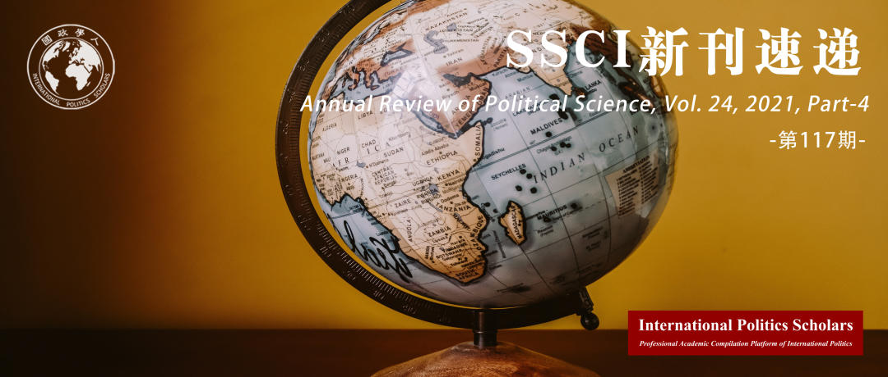

收录于合集
#新刊速递 123 个
#政治学年度评论 1 个

期刊简介
《政治科学年度评论》（ Annual Review of Political Science ）是一份1998年起发行的同行评审学术期刊，由Annual Reviews出版。该期刊每年出版1次，内容为对政治学研究重要进展的综述。据2021年发布的期刊引证报告指，《政治科学年度评论》的影响因子为8.091，在182份政治科学类的期刊排名第2位。今天向读者推荐2021年《政治科学年度评论》第4部分。

本期目录
1. 选举性别配额如何影响政策?
How Do Electoral Gender Quotas Affect Policy?
2. 谁会进入政界，为什么？
Who Enters Politics and Why?
3. 田野实验的伦理问题
Ethics of Field Experiments
4. 种族暗示和种族诉求在美国选举中的持续性
The Persistence of Racial Cues and Appeals in American Elections
5. 我们可以从成文宪法中学到什么？
What Can We Learn from Written Constitutions?
6. 地方政治的兴起：全球回顾
The Rise of Local Politics: A Global Review
01
选举性别配额如何影响政策?
题目： How Do Electoral Gender Quotas Affect Policy?
作者： Amanda Clayton，范德比尔特大学政治科学系。
摘要： 世界上大多数国家的立法机构都存在选举性别配额。一般而言，配额制确立后，立法上会更加注意妇女作为一个群体的利益和优先事项。在所有案例中，这种影响在与妇女权利、公共卫生和减贫相关的问题上体现得最为显著。配额可以从两个方面影响政策：首先，配额可能会向所有官员发出信号，促使男性和女性立法者的行为整体发生变化。其次，配额通常会使更多的女性进入立法机构，导致立法者总体偏好的转变，并提高了女性群体影响立法决策的能力。然而，配额的积极影响并不普遍，一些研究表明，配额导致的政策变化有限，甚至会产生更不平等的结果。我提出了几个缓和配额采用和政策变化之间关系的潜在变量，包括未经充分探索的配额设计。
Electoral gender quotas now exist in a majority of national legislatures worldwide. In general, quotas are followed by greater legislative attention to the interests and priorities of women as a group. Across cases, effects have been most pronounced on issues related to women’s rights, public health, and poverty alleviation. Quotas can influence policy in two general ways: First, quotas may send cues to all officeholders, prompting broad changes in legislator behavior among both men and women. Second, quotas typically bring more women into legislatures, causing a shift in aggregate legislator preferences and increasing women’s ability to collectively influence legislative decisions. Yet, the positive effects of quotas are not universal, and some research reveals instances in which quotas have led to limited policy changes or even to more gender-inegalitarian outcomes. I suggest several variables that may moderate the relationship between quota adoption and policy change, including underexplored dimensions of quota design.
02
谁会进入政界，为什么？
题目： Who Enters Politics and Why?
作者： Saad Gulzar，美国斯坦福大学政治系。
摘要： 尽管政治家的重要性是不言而喻的，但实证研究工作很少研究谁会决定进入政界以及为什么。本文的调查提出了衡量政治进入的概念性问题；回顾了在个人、组织和制度层面关于政治进入的决定因素的研究，并总结了近期关于竞选公职的微观人口普查研究中与代表性/能力平衡相关的主要发现和难题。文章最后还强调了未来研究中的富有前景的方向。
Despite the importance of politicians, empirical work rarely examines who decides to enter politics and why. This survey presents conceptual issues in measuring political entry; reviews work on individual, organizational, and institutional determinants of political entry; and summarizes the main findings and puzzles related to the representation/competence trade-off in recent microcensus studies on who runs for office. Fruitful directions for future work are highlighted throughout the article.
03
田野实验的伦理问题
题目 ：Ethics of Field Experiments
作者 ：Trisha Phillips，西弗吉尼亚大学政治学系副教授。
摘要 ：政治学家们越来越多地进行田野实验（Field Experiment），但这些实验带来了标准审查标准和程序无法解决的伦理问题。田野实验研究可以用于研究重要问题，但实验本身也可能损害个人、社区和政治进程，破坏自治，由实验设置的伙伴关系带来复杂的责任问题，或使公众对该学科失去信任。本文回顾了已发表的实证研究和理论研究、专业指南、媒体报道、博客文章和其他适当来源。本文总结了田野实验中对伦理问题的识别、相关的规范性指导，以及解决伦理问题的拟议策略、可能出现的问题。本文得出，该领域取得良好的进展，能够在有强制力的指导方针和战略下进行符合伦理的田野实验。然而，学界仍需完善和传播目前已有的指导意见，解决尚存的实验伦理问题，并促进进一步的实验规范。本综述最后为进行政治学田野实验的研究人员提出了一些一般性建议。
Political scientists are increasingly conducting field experiments that raise ethical issues that standard review criteria and processes are ill equipped to address. Field experiments can answer important questions, but they can also present various harms to individuals, communities, and political processes; undermine autonomy; introduce partnerships that present complex questions of responsibility; and damage the public’s trust in the discipline. This article reviews published empirical and theoretical research, professional guidelines, and media accounts, blog posts, and other sources when appropriate. It characterizes the state of the field regarding the identification of ethical problems, relevant normative guidance, proposed strategies for managing ethical concerns, and issues on the horizon. It concludes that the discipline is making good progress, with robust guidelines and strategies for conducting field experiments ethically. However, there is still much work to be done in refining and expanding current guidance, addressing remaining issues, and promoting norms. This review concludes with some general recommendations for researchers conducting political science field experiments.
04
种族暗示和种族诉求在美国选举中的持续性
题目 ：The Persistence of Racial Cues and Appeals in American Elections
作者 ：LaFleur Stephens- Dougan，普林斯顿大学政治系助理教授，研究兴趣为种族政治、黑人政治和公众舆论。她在密歇根大学取得公共政策与政治学博士学位。
摘要： 本文回顾了关于种族暗示和种族诉求在美国选举中的持续性的文献。作者主要关注三个主题：种族争议、奥巴马总统竞选对种族暗示的影响，以及美国日益多元化背景下的种族诉求。作者辨识出了这几个领域之间的联系，并依此为进一步研究做出了建议。作者认为，在美国日益多元化的背景下，学者们应该开发能辨别对黑人以外其他特定族群的态度的方法。美国日益增长的种族与族群多元性也为突破黑白二分来检验少数族裔政治行为理论的提供了机会。最后，因为大多研究只关注白人的种族敌意，作者建议学者今后花更多时间关注种族暗示如何影响那些有积极种族态度的白人。
This article reviews the literature on the persistence of racial cues and appeals in American elections. I focus on three central themes: racial priming, the influence of the Obama presidential campaigns on racial cues, and racial appeals in the context of a diversifying United States. I identify linkages across these domains while also suggesting avenues for future research. I argue that in the context of a diversifying United States, scholars should develop more measures that capture attitudes that are specific to groups other than African Americans. The nation’s growing racial and ethnic diversity is also an opportunity to develop and test more theories that explain the political behavior of racial and ethnic minorities beyond the traditional black–white divide. Finally, since much of the research on racial cues focuses on whites’ racial animus, I suggest that scholars spend more time exploring how racial cues influence the behavior of whites with positive racial attitudes.
05
我们可以从成文宪法中学到什么？
题目： What Can We Learn from Written Constitutions?
作者： Zachary Elkins，德克萨斯大学奥斯汀分校政府系副教授，研究重点是民主、制度改革、研究方法和国家认同等问题，研究区域是拉丁美洲；Tom Ginsburg，芝加哥大学法学院里欧·史皮兹（Leo Spitz）国际法教授、Ludwig and Hilde Wolf研究学者、政治学教授，从跨学科的角度研究比较法和国际法。
摘要： 本文回答了比较政治有关正式制度的实证研究所面临的一系列著名挑战。本文重点研究成文宪法的案例，并讨论了其在面对四个分析和理论挑战中研究的学术效用。这些挑战反过来也隐含着一组实证问题，而本文分析原始数据初略得出其答案。通过数据分析和相关讨论，本文提出了一套指导方针，指导如何在涉及政治制度的主题的比较研究中使用成文宪法。
This article responds to a set of well-known challenges to empirical research on formal institutions in comparative politics. We focus on the case of written constitutions and discuss the scholarly utility of studying such documents in the face of four analytic and theoretical challenges. Each of these challenges, in turn, implies a set of empirical questions, for which we invoke original data to sketch a broad-brushed set of answers. The data analysis and accompanying discussion suggest a set of guidelines for how written constitutions should be deployed in comparative research designs on topics that involve political institutions.
06
地方政治的兴起：全球回顾
题目： The Rise of Local Politics: A Global Review
作者： Patrick Le Galès，巴黎政治学院法国国家科技研究中心社会学与政治学研究员。
摘要： 并非所有政治都具有地方性，甚至连地方政治本身可能都不具有地方性。地方政治的重新崛起虽然无法与政治国有化相提并论，但它却是使不同层次的政策或多或少相互关联的基础。通过除北美外的全球回顾，本文认为当前学界在用三类过程解释地方政治的兴起：(a）民主化（包括抗议运动），（b）经济全球化、城市化与领土不平等的深化，以及（c）去中心化与地方治理及政策的兴起。地方政治的兴起不是对过往的复兴，而是扩大规模的政治中的基础，因为全球的地方政治研究开始愈发与政策、治理和政治选择相关。
Not all politics is local. Not even local politics is necessarily local. The reemergence of local politics is not comparable to the nationalization of politics but is rather an element making multilevel policies more or less interconnected. This global review (not including North America) suggests that the rise of local politics is explained by three set of processes—(a) democratization, including protest, (b) economic globalization, urbanization, and the deepening of territorial inequalities, and (c) decentralization or deconcentration and the rise of local governance and policies. The rise of local politics is not a revival of the past but an element of the politics of scale taking. All over the world, local politics is increasingly about policies, governance, and political choice.
编译 | 吕紫烟 王芷汀 钱靓 戎秦婴 徐一凡 阮辰阳
审校 | 卫艺璇 李博轩 杨沛鑫 黄慧彬 姚寰宇 邵良
排版 | 屈媛媛 云琪布日
文章观点不代表本平台观点，本平台评译分享的文章均出于专业学习之用, 不以任何盈利为目的，内容主要呈现对原文的介绍，原文内容请通过各高校购买的数据库自行下载。

国政学人
支持学术公益与知识传播
微信扫一扫赞赏作者 __赞赏
已喜欢，对作者说句悄悄话
取消 __
发送给作者
发送
最多40字，当前共字
上一页 1/3 下一页
长按二维码向我转账
支持学术公益与知识传播
受苹果公司新规定影响，微信 iOS 版的赞赏功能被关闭，可通过二维码转账支持公众号。